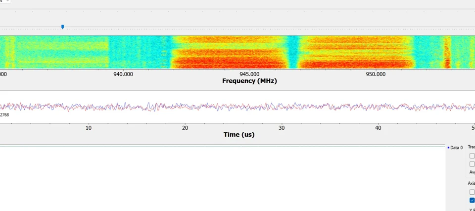
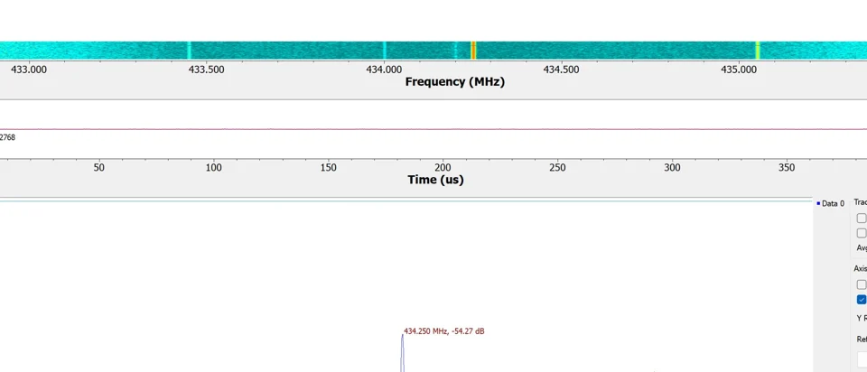
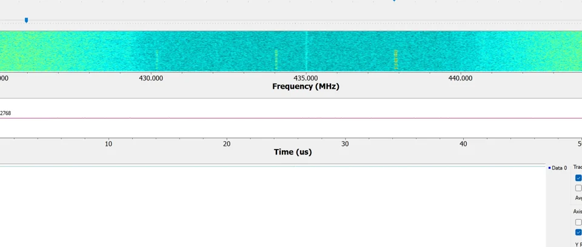

به نام خدا
آزمایش ۰۱ گزارش پس از جلسه
پایش طیف
گزارش آزمایشگاه رادیو نرمافزار، از دریافت نخستین طیف تا آزمون حلقه و اندازهگیری سیگنالهای رادیویی.
بخشهای گزارش
بخشهای گزارش
مراحل اجرا، شکلها، قرائتها و تحلیل هر بخش.

۰۱بخش اول ۸ تصویر
راهاندازی و دریافت طیف
شناسایی دستگاه، فلوگراف پایش، آزمون محور فرکانس و دو دور قرائت حاملهای GSM900.
مطالعهٔ گزارش
۰۲بخش دوم ۸ تصویر
آزمون کابل حلقه
تنهای مثبت و منفی، آزمون جابهجایی LO، تصحیح DC و بررسی حجم فایل ضبط.
مطالعهٔ گزارش
۰۳بخش سوم ۱۱ تصویر
پویش باندها و شناسایی سیگنالها
لاگبوک پویش، رفتار گذرا و پیوسته، بازاندازهگیری لبههای فرکانسی و تحلیل پهنای باند.
مطالعهٔ گزارشپرسشهای دستورکار
دسترسی مستقیم به پاسخها و محاسبات.